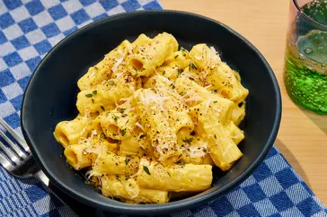

Copycat Trader Joe's Butternut Squash Mac and Cheese

Description
This fall dish tastes just like the store-bought favorite—but with
even more flavor.
Ingredients
16 ounces uncooked rigatoni pasta
1 tablespoon unsalted butter
3 cups cubed (3/4 inch pieces) peeled butternut squash (from 1
small [1 1/2 pound] squash)
6 fresh sage leaves
1 teaspoon chopped fresh thyme, plus more for garnish
1 teaspoon kosher salt, plus more to taste
1/2 teaspoon black pepper, plus more for garnish
3 cups whole milk
2 teaspoons onion powder
1 teaspoon garlic powder
1/8 teaspoon cayenne pepper
1/8 teaspoon freshly ground nutmeg
1/8 teaspoon turmeric powder
2 teaspoons Dijon mustard
1 cup shredded sharp yellow Cheddar cheese
1 cup shredded Gouda cheese
2 tablespoons freshly grated Parmesan cheese, plus more for
garnish
Steps
Gather all ingredients.
Bring a large pot of salted water to a boil over high. Add pasta
and cook according to package directions for al dente. Drain,
reserving 1 cup of pasta cooking water; set pasta aside.
While pasta cooks, melt butter in a large Dutch oven over medium.
Add butternut squash, sage, thyme, salt, and pepper, and cook,
stirring occasionally, until browned on all sides, about 6 to 8
minutes.
Stir in milk, onion powder, garlic powder, cayenne, nutmeg, and
turmeric and bring to a boil over high, stirring occasionally.
Reduce heat to medium, cover, and cook, stirring occasionally,
until squash is tender, about 6 minutes.
Transfer squash mixture into a blender and add Dijon mustard.
Secure lid on blender, and remove center piece to allow steam to
escape. Place a clean towel over opening. Process until very
smooth, about 30 seconds. (Alternatively, puree soup with an
immersion blender until smooth, about 3 minutes).
Add pasta and pureed squash mixture to Dutch oven; gently heat
over medium until pasta is warmed through, about 2 minutes. Stir
in Cheddar, Gouda and Parmesan and cook over low, stirring
constantly, until smooth, about 1 minute. Stir in 1/4 cup of the
reserved pasta cooking water. Cook, stirring often, and add
remaining cooking water, 1/4 cup at a time, as needed, until sauce
is creamy and clings to pasta, 2 to 3 minutes. Season with
additional salt to taste.
Divide among bowls and garnish with thyme, black pepper, and
Parmesan.